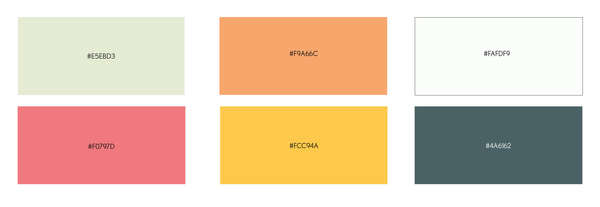

Version 1.0
TYPOGRAPHY
Here is the body text that will be used for menus, about sections, directions to the restaurant, and more.
This is the italic version of the body typeface which will be used for image captions.
Spicy Village offers delicious dining and takeout to New York, NY. Spicy Village is a cornerstone in the New York community and has be recognized for its outstanding Chinese cuisine, excellent service, and friendly staff. Our Chinese restaurant is known for its modern version of classic dishes and its insistence on only using high quality fresh ingredients.
COLORS
